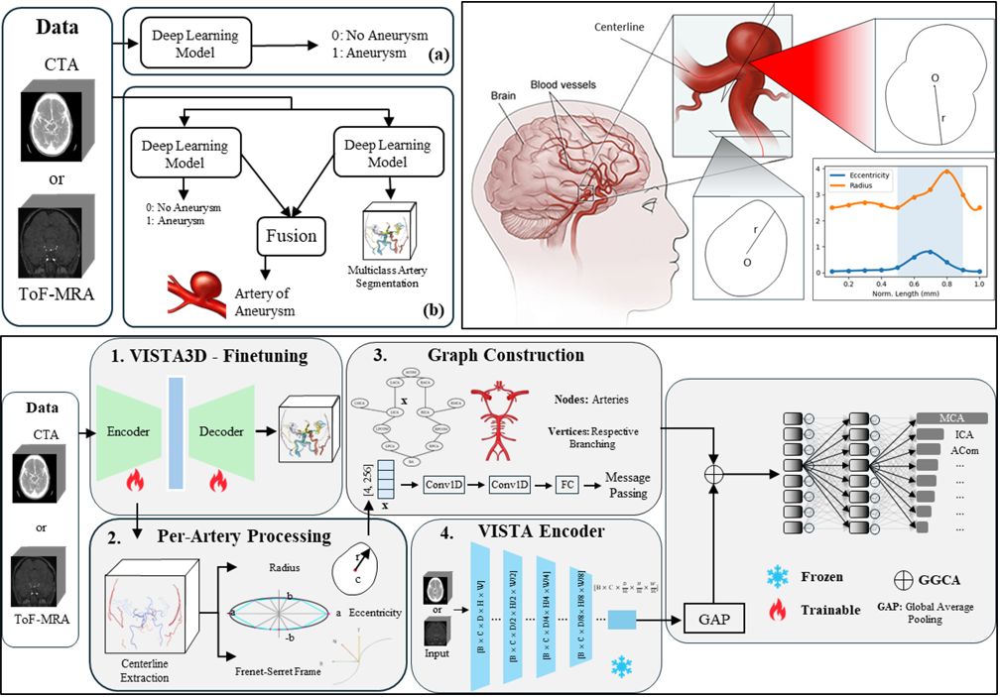

CVPR 2026
ARAN: Leveraging Foundation Models for Vasculature-Tree-Informed ARtery-Aware Intracranial ANeurysm Detection in 3D CTA and ToF-MRA
Muzammal Shafique, Nasir Rahim, Muhammad Saad Saeed, Ghaus Malik, Khalid M. Malik
IEEE/CVF Conference on Computer Vision and Pattern Recognition (CVPR), 2026
PDF
Computed Tomography Angiography and Time-of-Flight Magnetic Resonance Angiography serve as clinical standards for non-invasive intracranial aneurysm assessment; however, automated detection and precise localization remain significant challenges. Existing computational methods treat aneurysm detection as a binary detection task. Critically, these approaches typically neglect the identification of the parent artery, a vital parameter for hemodynamic rupture risk assessment and surgical planning. To address these limitations, we present ARAN, an ARtery-aware intracranial ANeurysm detection framework that leverages foundation model representations and vascular geometry priors from CTA and ToF-MRA. Our approach combines a finetuned VISTA3D encoder for volumetric feature extraction with a graph-based geometric branch that models artery specific geometric descriptors, including radius profiles, eccentricity, and Frenet-Serret’s curvature-torsion sequences derived from vessel centerlines. The two branches are fused through Geometry-Gated Cross-Attention, enabling geometry-aware modulation of visual features. Experiments on publicly available datasets demonstrate state of-the-art artery-level classification accuracy of 78.2% on CTA and 85.8% on ToF-MRA, outperforming vision-only and geometry-only baselines.